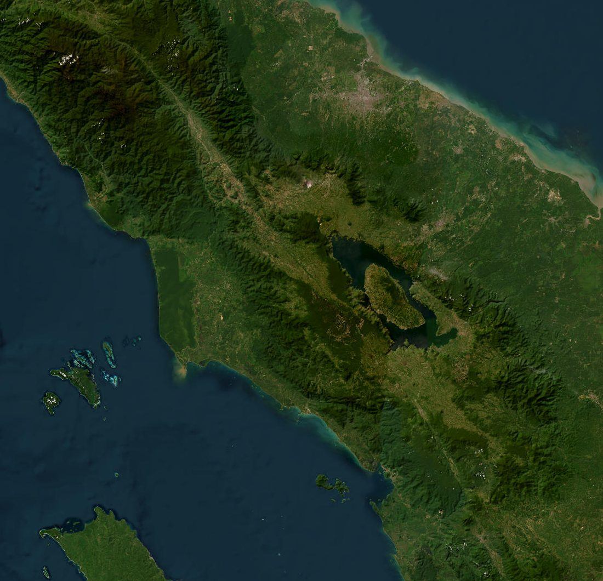

| Titik | Koordinat | Jarak tempuh | Waktu terbang | |
|---|---|---|---|---|
| B | WIMK Base Lanud Soewondo (WIMK) | 3.5589, 98.6719 | 0 km | +0 mnt |
| 1 | DZ1 Subulussalam (LZ Lapangan Bola Jambi, Kec. Sultan Daulat, kunjungan Desa Jabi-Jabi) | 2.7949, 97.8966 | 121 km | +36 mnt |
| 2 | DZ2 Tapanuli Tengah (Kec. Pandan, ibu kota kab.) titik menyusul | 1.6921, 98.8426 | 282 km | +85 mnt |
| B | WIMK Kembali ke Lanud Soewondo (WIMK) | 3.5589, 98.6719 | 491 km | +147 mnt |
Jarak dan waktu kumulatif sejak lepas landas, tanpa waktu bongkar muat di titik dropping.
| Leg | Dari ke | Koordinat tujuan (DMS) | Google Maps | Haluan sejati | Jarak | NM | Waktu |
|---|---|---|---|---|---|---|---|
| 1 | WIMK ke DZ1 | N 02° 47' 42" E 097° 53' 48" | 2.7949, 97.8966 | 225° | 120,9 km | 65,3 NM | 36 mnt |
| 2 | DZ1 ke DZ2 | N 01° 41' 32" E 098° 50' 33" | 1.6921, 98.8426 | 139° | 161,5 km | 87,2 NM | 48 mnt |
| 3 | DZ2 ke WIMK | N 03° 33' 32" E 098° 40' 19" | 3.5589, 98.6719 | 355° | 208,4 km | 112,6 NM | 63 mnt |
| Total | 491 km | 265 NM | 147 mnt |
Waktu leg pada 200 km/jam tanpa angin.